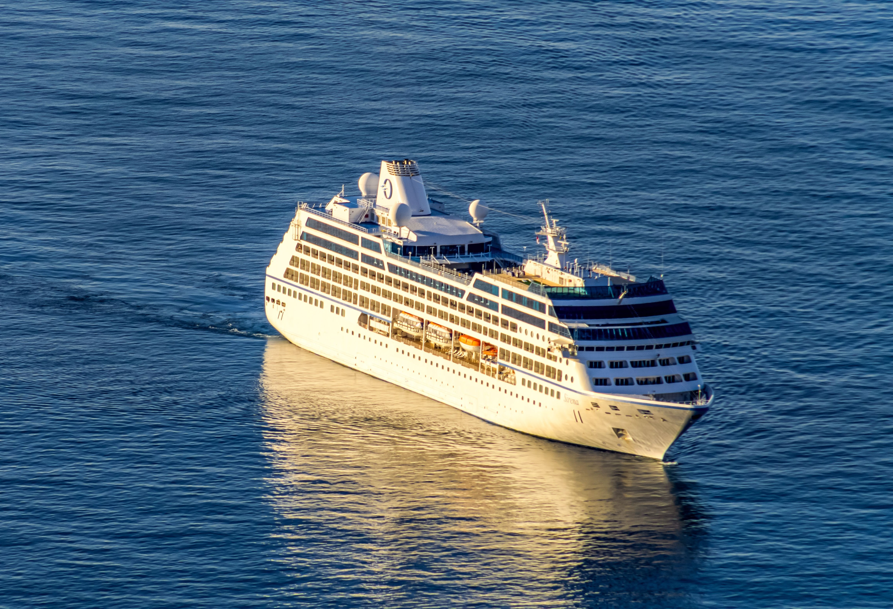
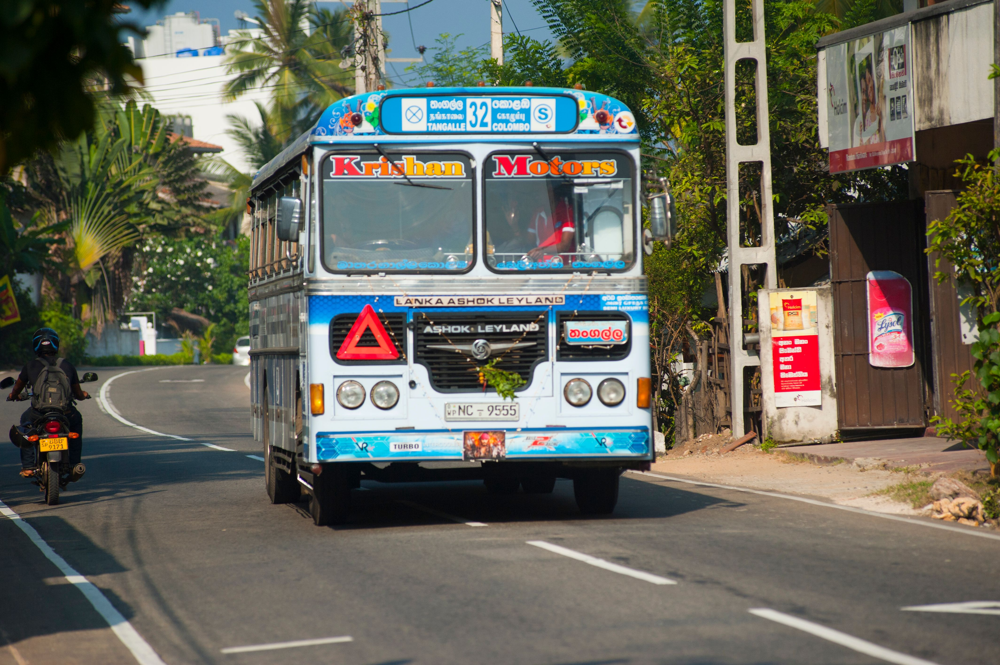

Transportation
Taniti is easy to reach and explore, with convenient transportation options available throughout the island.
To Tahiti
Arrive by air on small jets and propeller planes, or enjoy a weekly cruise ship stop at Yellow Leaf Bay.

On-Ground
Explore Taniti with public and private buses, taxis, rental cars, or bikes.
